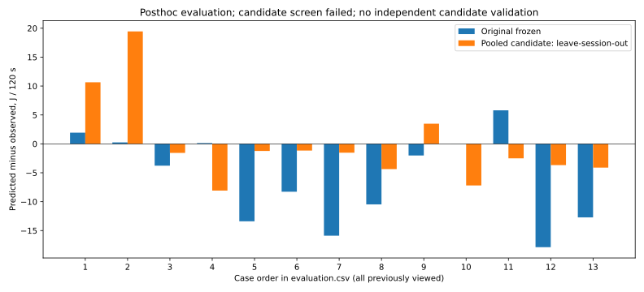

평균 개선, 최대오차 악화 — 사전 조건 불충족. 추가 확인 실측으로 진행하지 않습니다.
기존13세션의 사후 평가입니다. 평균 절대차7.118→5.307J, 최대17.871→19.447J. AP·처리시간과 원래 동결본은 그대로 보존했습니다. 기본 경로 변경과 정확도 PASS가 아닙니다.

각 세션3행 순서와 원래 자료 역할은 CSV에 있습니다. 미완료/실패 세션은 별도 보존했습니다.
전체 오차 · 적합 전 계약 · 판정 · 재현·한계·다음 작업 · 실측 대조 결과